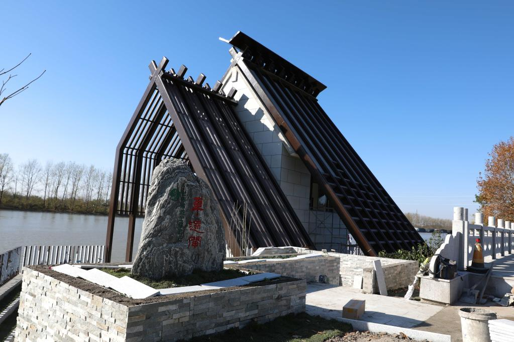
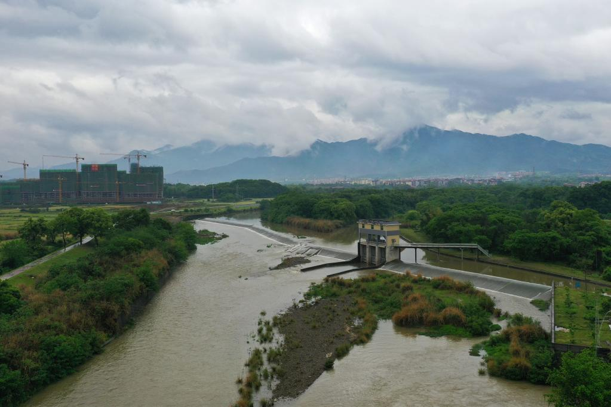
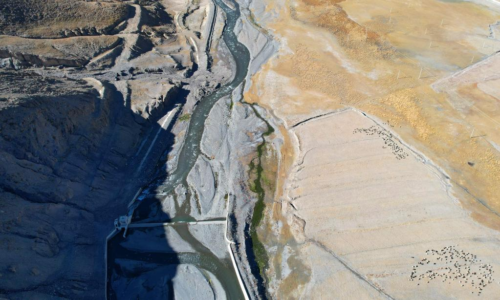
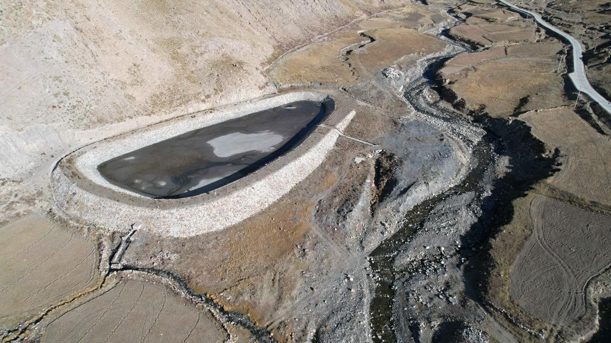
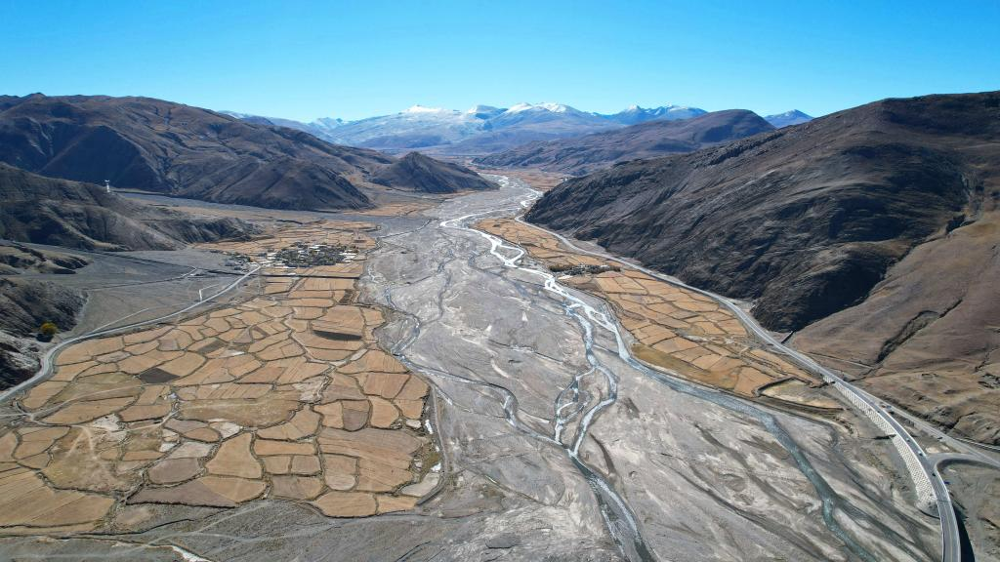

新华社北京11月27日电 题：海拔最高世界灌溉工程遗产诞生！我国3处新入选灌溉工程有何独特之处？
新华社记者刘诗平
江苏里运河-高邮灌区、江西潦河灌区、西藏萨迦古代蓄水灌溉系统26日成功入选2021年度世界灌溉工程遗产名录。 其中，平均海拔在4000米以上的西藏萨迦古代蓄水灌溉系统，是目前海拔最高的世界灌溉工程遗产。 这3处灌溉工程为什么能入选世界灌溉工程遗产？它们有何独特之处？
里运河-高邮灌区的车逻闸。（水利部供图）
里运河-高邮灌区：水系连通工程的典范
里运河-高邮灌区位于江苏省高邮市境内，通过闸、洞、关、坝等水工设施，连通高邮湖和高邮灌区， 实现水在“高邮湖—里运河—高邮灌区”之间调配，是我国古代巧妙利用河湖水位水量、合理调控河湖的水系连通工程的典范。
“高邮灌区引用京杭大运河（里运河）自流灌溉，有效灌溉面积达50万亩。 ”江苏省高邮市水利局副局长李江安说，里运河水工遗产的变迁和发展历经2500余年，形成了灌、排、挡、降等工程体系。 目前，高邮灌区遗存有平津堰、南水关洞、南关坝、车逻闸等水工设施遗产。
本次里运河-高邮灌区和萨迦古代蓄水灌溉系统申报世界灌溉工程遗产技术支撑团队负责人、浙江水利水电学院教授刘学应说， 里运河-高邮灌区治水理念科学、工程布局完善、建造工艺先进。它的先进性，体现在修筑堤堰调节运河水位， 形成了“防不足，泄有余”的治水理念，也体现在利用水闸、水洞、水关、水坝灌溉调水通道，通过干支斗渠三级配水网络实现灌溉， 形成了完善的灌溉用水体系，实现了调节旱涝的水位平衡，兼顾了灌溉和漕运的功能平衡。
潦河灌区的乌石潭陂。（水利部供图）
潦河灌区：江南丘陵地区现存最完整的灌溉系统工程
潦河灌区位于江西省西北部，地跨宜春市奉新县、靖安县和南昌市安义县。 唐朝太和年间人们在北潦河南支下游修筑蒲陂，开渠导水，灌溉农田千余亩，明清时期相继在中游、上游兴建乌石潭陂和香陂， 成为江南丘陵地区典型的古代引水灌溉系统工程。
江西省潦河工程管理局办公室副主任潘澎说，潦河灌区是江西省兴建最早的多坝自流引水灌区， 也是江南丘陵地区现存最完整的传统灌溉系统工程。新中国成立后，潦河灌区又相继兴建4座灌溉工程并延续至今，灌溉农田33.6万亩。
据专家介绍，蒲陂、乌石潭陂和香陂蕴含着丰富的科技价值，3座古陂都选址于河道折弯处，坝体为非正交堰形式， 尤其是乌石潭陂，充分利用河中“巨石”拦河筑坝，并在河堤上植树成林，护陂固圳， 古樟树群今天依然保存完好，是古人因地制宜、人水和谐相处的典范。
 萨迦古代蓄水灌溉系统局部。新华社记者 刘诗平摄
萨迦古代蓄水灌溉系统：高海拔地区的智慧水利工程
萨迦古代蓄水灌溉系统位于西藏自治区日喀则市，平均海拔在4000米以上，是目前海拔最高的世界灌溉工程遗产。
“宋末元初时期，萨迦蓄水灌溉的技术主要覆盖了以萨迦寺为中心的萨迦县、拉孜县等区域。 按照传统习惯，我们把萨迦蓄水灌溉技术惠及的地方统称为‘萨迦灌区’。”萨迦县水利局副局长蔡光祥说。
刘学应表示，在高海拔、高寒地区建成的这个蓄水灌溉系统，写下了水利工程史上的精彩一笔。 它因地制宜，同时发展出了与之相适应的管理体系，有力地推动着当地经济和社会文化发展。
记者在萨迦县冲曲河畔看到，一个个蓄水池犹如镶嵌在高原上的一颗颗珍珠，蓄水池大体采用敞口形式， 由引水渠、池体和出水管网等组成。站在蓄水池旁，为萨迦古代蓄水灌溉系统申报世界灌溉工程遗产提供技术支撑的水利专家朱海东博士告诉记者， 蓄水池敞口晒水，使得原本由融雪冰水汇集成的冰凉的池水，温度得到大大提升，从而有助于青稞在高寒环境下茁壮成长。
据不完全统计，萨迦灌区仍有400多个蓄水池在发挥作用，灌溉着河谷平原约10万亩的青稞产区，助力日喀则发展成为“世界青稞之乡”。
萨迦县境内的冲曲河。新华社记者 刘诗平摄
灌溉工程遗产：中华文化遗产的闪亮“名片”
世界灌溉工程遗产名录由国际灌排委员会于2014年设立，目前我国的世界灌溉工程遗产共有26处。
记者了解到，特有的自然气候条件，使灌溉成为我国农业经济发展的基础支撑，历史上建设了数量众多、类型多样、区域特色鲜明的灌溉工程， 许多至今仍在发挥功能。延续至今的灌溉工程遗产，值得挖掘和总结其科学技术、文化价值和管理经验。
中国国家灌排委员会主席、水利部农村水利水电司司长陈明忠表示，中国古灌溉工程遗产是中华文化遗产的重要组成部分， 应科学保护灌溉工程遗产体系、挖掘传承区域特色水利历史文化、发挥工程效益保障国家粮食生产， 为乡村振兴战略实施、促进农业农村现代化发展提供重要水利支撑。